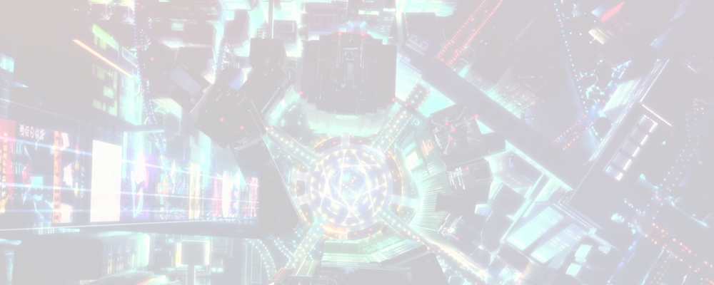
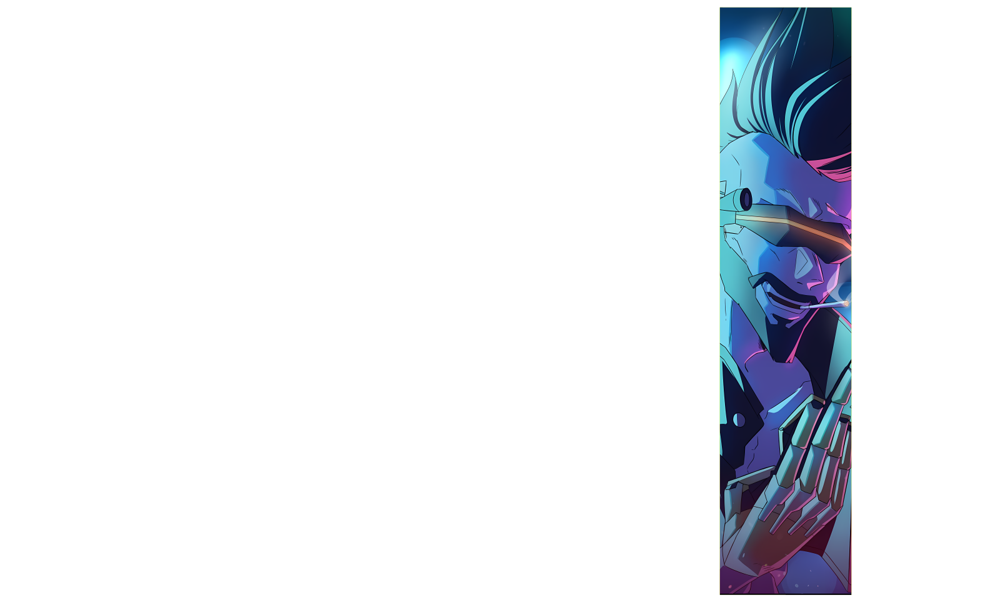
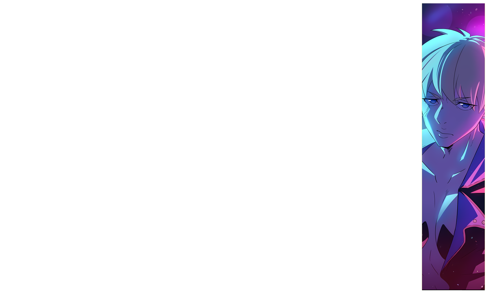
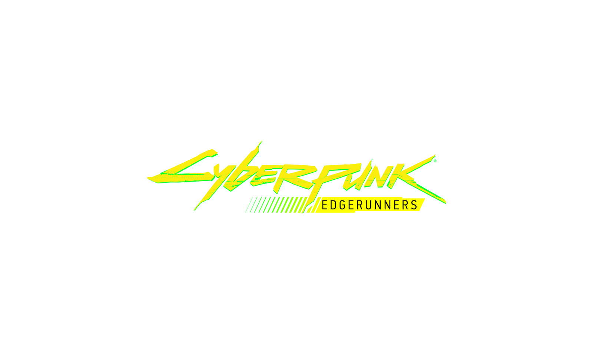
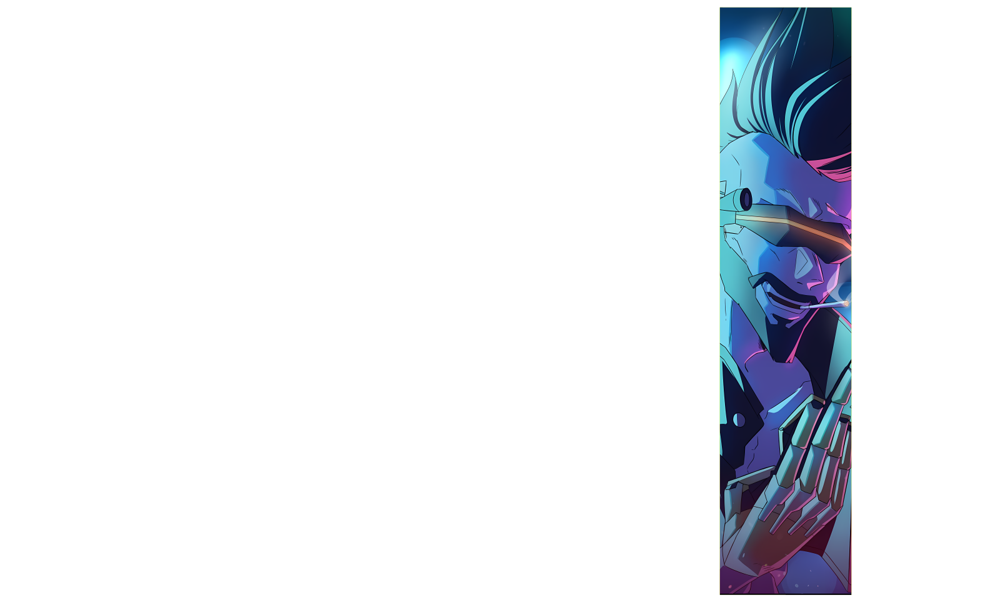
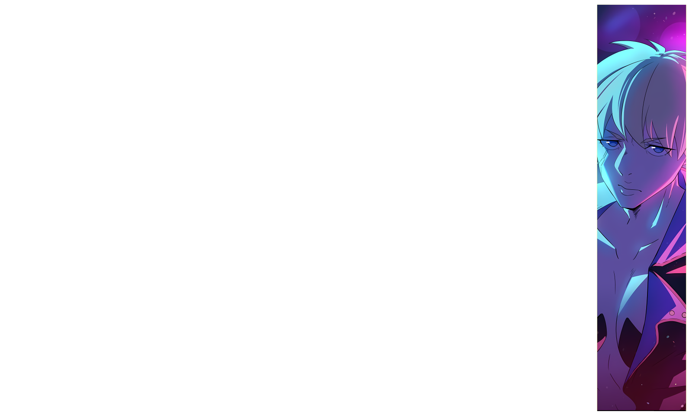
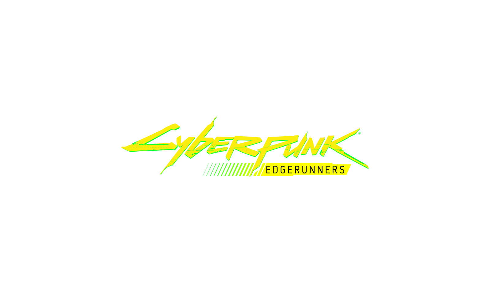

La historia de Cyberpunk: Edgerunners transcurre en la ciudad estadounidense de Night City, una megaciudad en el Estado Libre de California del Norte.
Dicha ciudad sufre una gran corrupción, adicción cibernética y violencia de pandillas. La ciudad está dividida en seis distritos,
cada uno de los cuales tiene sus propios requisitos de vida precisos, y está controlada por varias megacorporaciones diferentes,
incluidas Arasaka Corporation y su rival Militech Corporation.
La historia del anime se desarrolla principalmente en Santo Domingo, el distrito más antiguo, pobre e industrial de Night City.
En una distopía invadida por la corrupción, el crimen y los implantes cibernéticos,
un joven impulsivo pero talentoso llamado David Martinez, después de perder todo lo que tiene en un tiroteo desde un vehículo,
toma la decisión de sobrevivir en el lado equivocado de la ley como un "edgerunner": un mercenario del mercado negro de alta tecnología también conocido como "cyberpunk"
para así poder finalmente ganarse la vida por medio de encargos.
By Wikipedia
 




